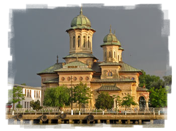
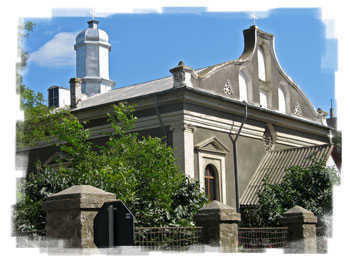
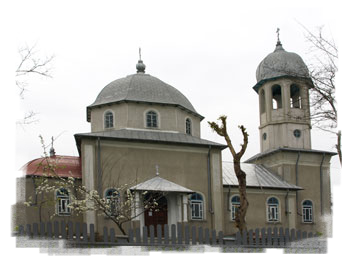
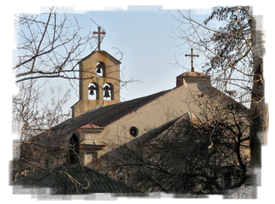
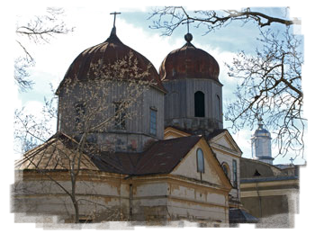
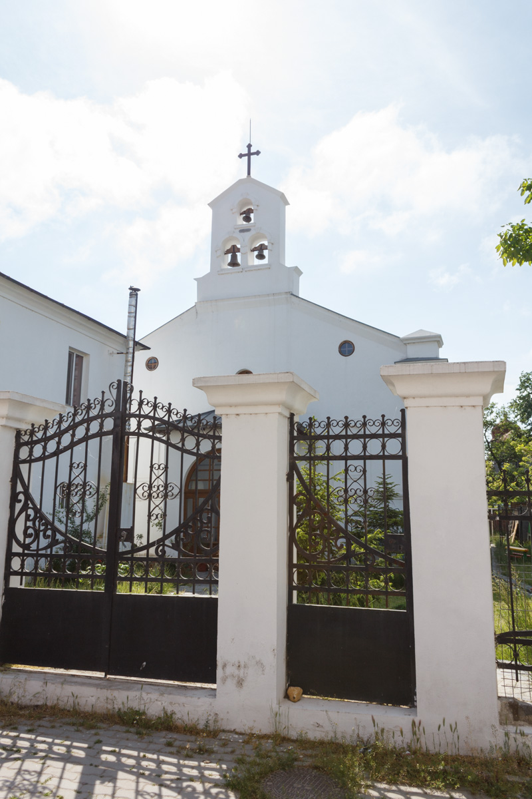
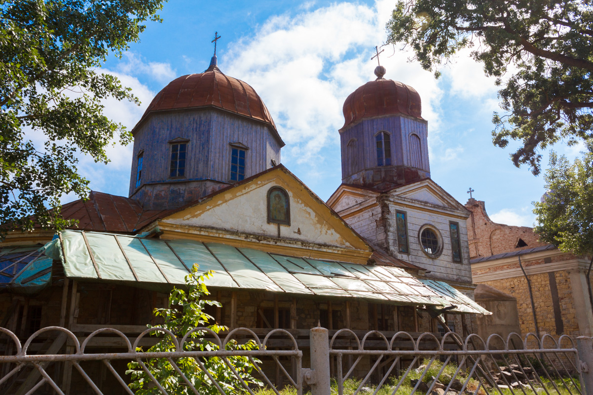
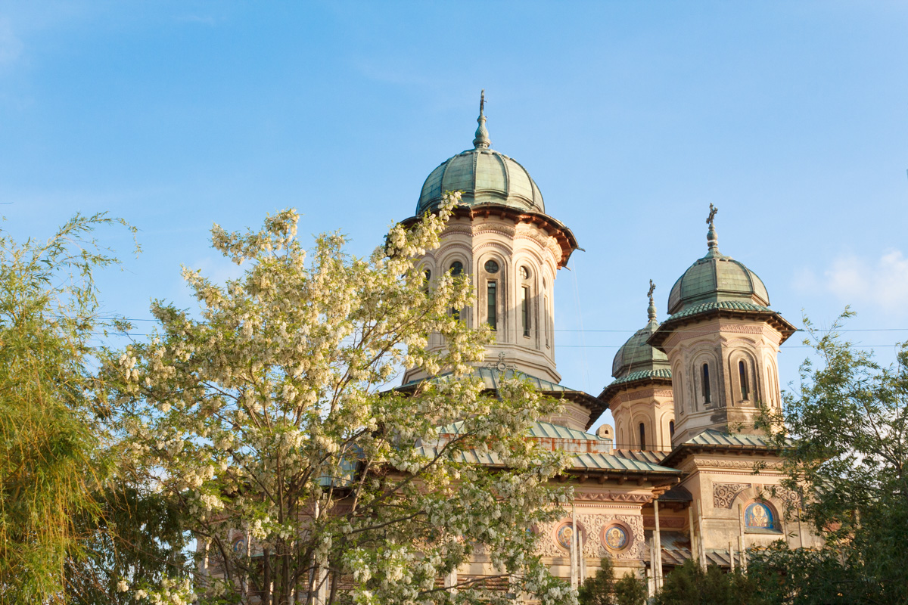

Biserica Sf. Alexandru şi Sf. Nicolae
882 reprezintă pentru Sulina anul în care este conştientizată
construirea unei noi noi biserici. Astfel, viaţa religioasă de la
gurile Dunării capătă o altă dimensiune odată cu sosirea preotului
V. Gheorghiu, care transformă nevoia realizării acestei construcţii
din vis în realitate.
Organizează corala bisericii, cu care participă în 1906 la Expoziţia
de la Bucureşti şi câştigă o medalie de aur ce atrage simpatia
regelui Carol I. Având acest ascendent moral, începe în 1908
colecţia bănească pentru biserica visată, iar în 1910, în prezenţa
familiei regale se pune piatra de temelie la Catedrala Deltei.
În actul de fundaţie se spune: „Începutu-sa acest dumnezeiesc lăcaş cu
hramul Sf. Ierarh Nicolae şi Sf. Alexandru, patronul zilei de 30 august,
când oastea română la 1877 a mărturisit pe câmpul de luptă vechi virtuţi
străbune, astăzi 31 octombrie 1910, într-al 45-lea an de domnie al
Măriei Sale Regele Carol I şi al soţiei sale, Maria Sa Regina
Elisabeta“.
Biserica grecească Sf. Nicolae
A fost zidită în anul Domnului 1868, putând hramul Sf. Nicolae,
fiind sfinţită în anul 1869. Clopotniţa are trei clopote, două
dintre ele având inscripţia: "Sulina 1933". Covoarele şi
tapiseriile, înrămate, sub sticlă, sunt donaţii ale enoriaşilor
greci ai oraşului Sulina. Este o fostă filială a bisericii Sf.
Nicolae. În anul 1906 biserică era în stare bună, funcţiona cu doi
preoţi şi trei cântăreţi şi deţinea două proprietăţi. În altar, Sf.
Masă are deasupra un frumos baldachin lucrat de maistrul Constantin
Ioan.


Biserica de rit vechi Sfinţii Petru şi Pavel
Biserica a fost construită în perioada august 1991 - iulie 1995.
În antecamera bisericii se află o placă pe care se află următoarea
inscripţie: „Construcţia bisericii a început în august 1991 şi s-a
făcut sfinţenia pe 12 iulie 1995. O contribuţie însemnată au adus-o
enoriaşii oraşului şi în mod deosebit: Preot paroh Danilov Savin,
Epitrop casier Petrichei Irimia şi MS. Constr. Sipatchin Demid“.
Din biserică veche a rămas Sf. Masă.
Ascultând o slujbă ţinută în biserica enoriaşilor rusi-lipoveni
constatăm cu uimire că singura deosebire faţă de slujba enoriaşilor
ortodocşi este limba.
La fiecare slujbă suntem plăcut surprinşi de faptul că portul
tradiţional al credincioşilor a supravieţuit până în zilele noastre,
nicio femeie neavând voie să intre în biserică cu capul descoperit sau
purtând pantaloni.
Biserica romano - catolică Sf. Nicolae
Biserica romano - catolică Sf. Nicolae a fost sfinţită în anul 1863,
construcţia fiind rezultatul efortului financiar al comunităţii
italiene din oraşul Sulina. Este împrejmuită de un gard de fier
forjat, prins între coloane de piatră, pe partea superioară în
mijlocul fiecărei coloane se află câte o ţeavă de fier în care, în
vreme de sărbătoare, se introduceau steaguri.
Stilul construcţiei este de tip italian, specific celei de-a două
jumătăţi a secolului IX. O parte din vitraliile bisericii sunt
originale.

Este o construcţie din piatră de Malta şi cărămidă. Cele trei clopote
din clopotniţa bisericii au fost turnate din bronz şi datează din anul
sfinţirii bisericii, respectiv anul 1863.
Cum intri în interiorul bisericii, pe cele două laturi, latura sudică şi
vestică, se află 14 picturi care simbolizează „Calea Crucii“, ce
reprezintă drumul străbătut de Isus Hristos de la temniţa în care a fost
închis şi până în momentul răstignirii Lui, pe muntele Golgota.
Deasupra altarului mare se află icoana Sf. Nicolae, protectorul
bisericii. Pe masă, ce reprezintă altarul mic, se află Liturghia. Până
în anul 1970 slujbele erau ţinute în limba latină, apoi slijbele au fost
ţinute în limba română.
Cum păşeşti pragul bisericii, în dreapta se află o statuetă ce îl
întruchipează pe Sf. Nicolae. Balconul bisericii găzduia corul şi
cântăreţii bisericii.

Biserica ortodoxă Sf. Nicolae
Biserica ortodoxă Sf. Nicolae era cunoscută drept Catedrală, fiind
prevăzută cu Amvon. Deoarece erau multe etnii care se adunau aici,
credincioşii bisericii ortodoxe române şi-au construit biserica cu
hramul Sf. Nicolae - patronul marinarilor - în anul 1866, alături de
altă biserică veche de lemn pe care, la punerea în funcţiune a
acestei noi biserici, au demolat-o, folosind din ea doar
catapeteasma, parte din icoane şi cărţi de ritual. Pe locul Sf. Mese
din altarul bisericii vechi, ca spaţiul respectiv să nu fie călcat
de oameni, s-a construit o troiţă monument, având icoana Sf. Nicolae
- Hramul bisericii care există şi astăzi.
Biserica a fost restaurată în anul 1923 de către Arhim Calenic, parohul
de atunci al bisericii, renovată în anul 1956 de către preotul Vasile
Andreescu, înmormântat în curtea bisericii ortodoxe Sf. Alexandru şi
Nicolae.
În biserica ortodoxă Sf. Nicolae nu se mai slujeşte din 05 septembrie
1982, de când a fost sfinţită Biserica Ortodoxă Sfântul Alexandru şi
Nicolae, actuală Catedrală.
Dacă ajungeţi în Sulina, opriţi-vă pentru o clipă la una dintre
bisericile din zonă. La cea grecească se află icoana Madonei Negre.
Chipul Fecioarei şi al Pruncului au fost acoperite miraculos cu smirnă.
În biserica italiană se găseşte o pictură semnată de Caravaggio,
precursorul barocului. În catedrala românească, catapeteasma este
pictată de Gheorghe Tăttărăscu, iar scaunul arhieresc este cel pe care a
stat Alexandru Ioan Cuza când a fost ales domnitor al Ţărilor Române.


